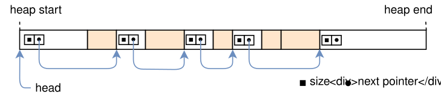
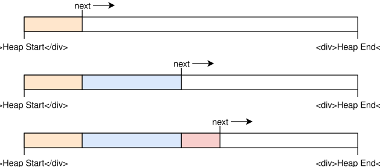
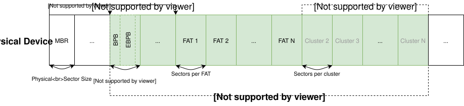
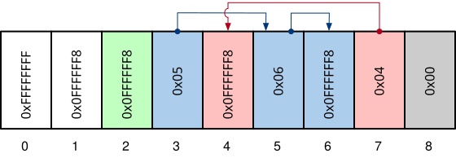
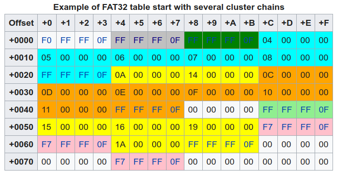

Maintaining free chunks for reuse
- Q. How to do
free()? - Q. How to do
alloc()? - Q. Where to store “link” then?

Taesoo Kim
Taesoo Kim
→ Complete/review your Lab3 before the exam!
Ref. Allocator Designs
alloc()?free()?
free()?alloc()?
alloc()?free()? Bins
sz=16 [ -]--->[fd]--->[fd]-->NULL
sz=24 [ -]--->[fd]--->NULL
sz=32 [ -]--->NULL
...

